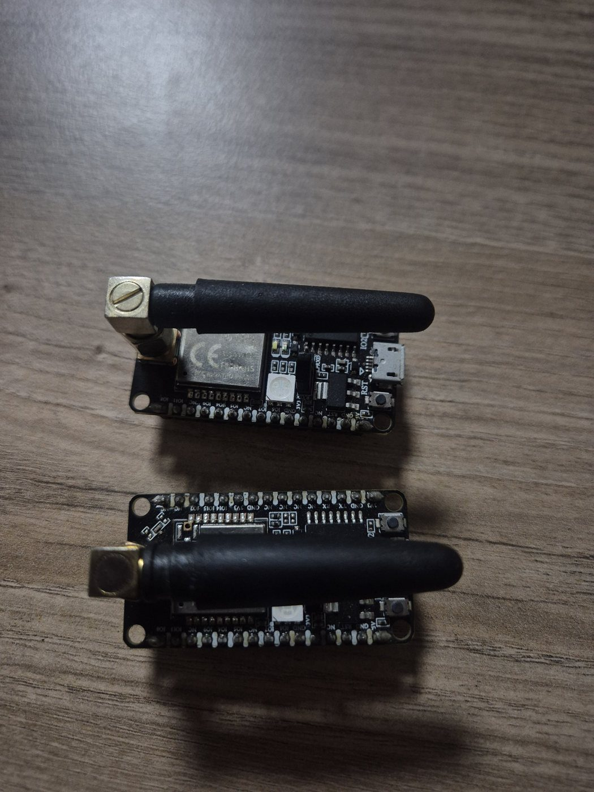
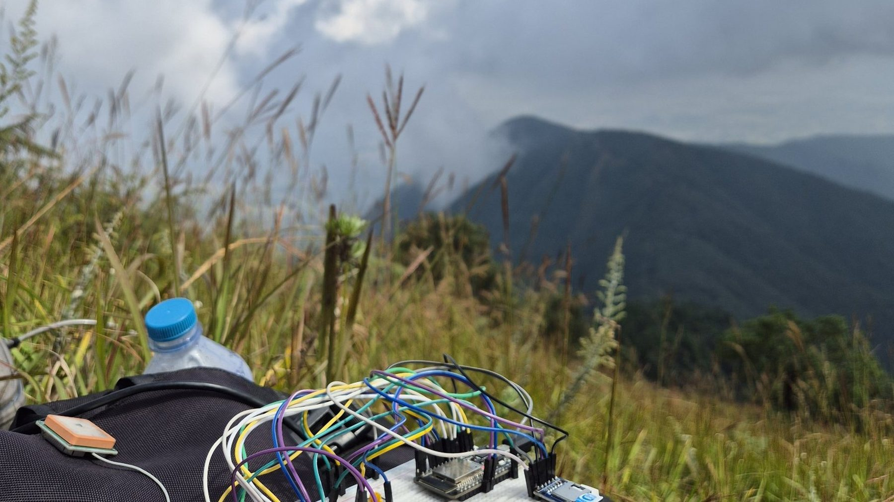
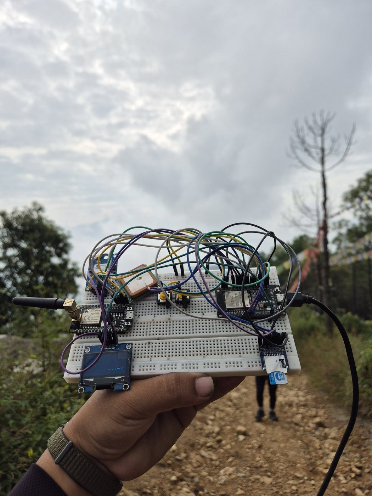
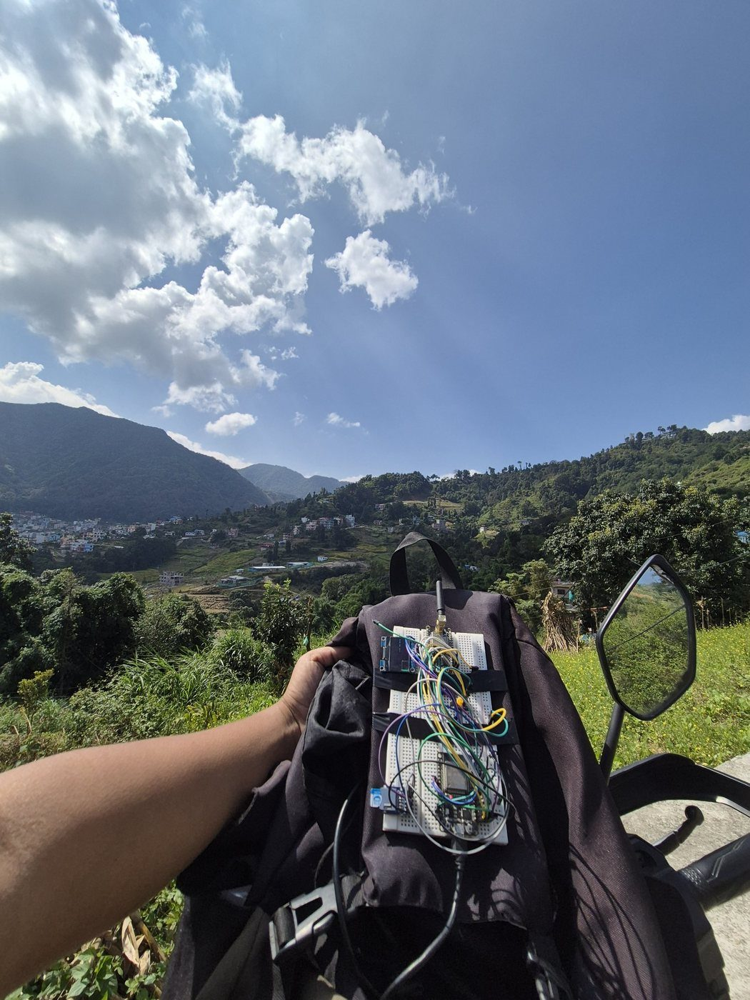
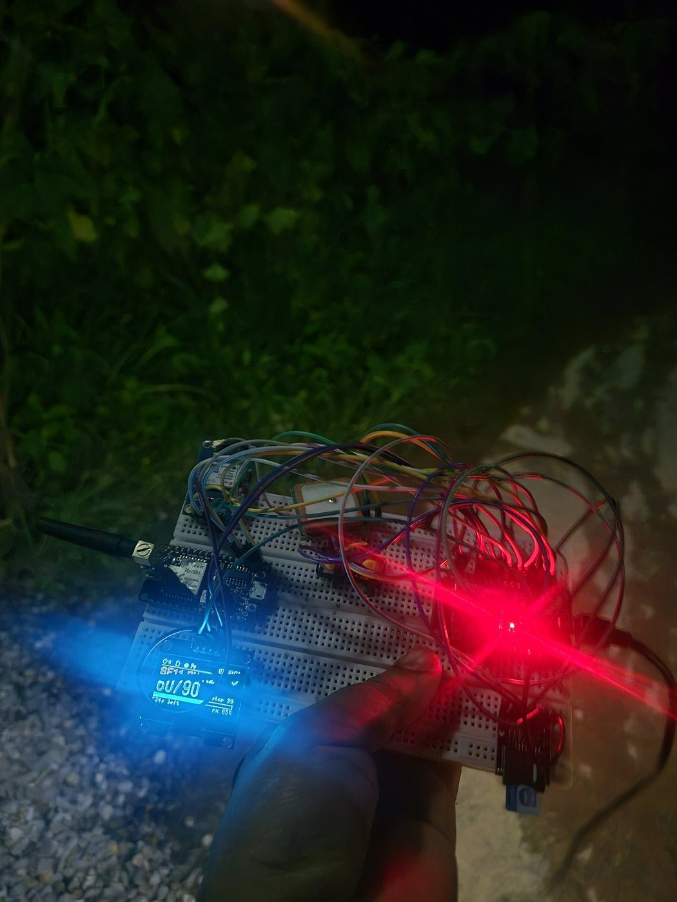
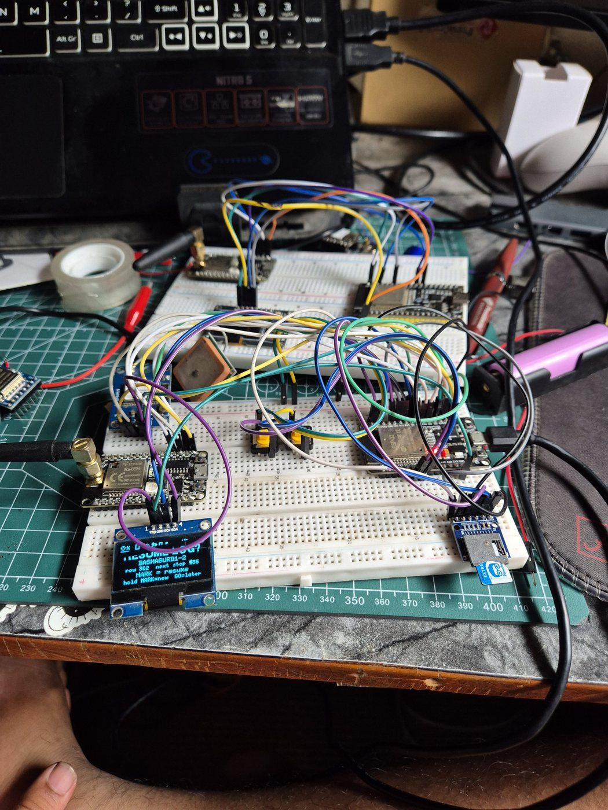

How a tiny sensor can save a life
LoRaWAN, MQTT and AWS IoT for disaster early warning in Nepal
Your guide on this trek
This isn’t hypothetical. 27–28 September 2024, Kathmandu Valley.
Forecasters saw the rain coming. The warnings didn’t say clearly what it meant for each street and each river bank.
Sources: Kathmandu Post via AFP; Copernicus Global Flood Monitoring; The Guardian via ACAPS; Imperial College London rapid study
Every answer needs the same thing first: someone, or something, that knows the water is rising.
Waypoint 1 of 4
What can a tiny sensor, and a satellite, actually see?
The Internet of Things: ordinary objects that sense the world and report it over a network.
Thing+sensor+network=IoT
billion connected IoT devices in 2024
That’s already more than two for every person on Earth. Laptops and phones aren’t even counted.
Source: IoT Analytics, State of IoT 2025
Each ring on the map is how far one radio reaches from the same sensor.
From orbit
Remote sensing: satellites and drones measuring Earth from far away. They see a whole region at once: rainfall, flood extent, landslide scars, glacial lakes.
But a satellite only passes over every few days.
From the ground
IoT sensors sit in one exact spot on a riverbank or a slope. They report water level, soil moisture and tilt every minute.
But each one covers only a small area.
Together you get the big picture and the ground truth.
Normal cameras are blind under monsoon clouds. Sentinel-1 uses radar instead.
Source: European Space Agency, Sentinel-1 mission
The satellite sees the flood days later. The sensor reports every minute.
Waypoint 2 of 4
If we can sense the danger, why does the warning still arrive late?
Every monsoon. Often at night. Often far from any phone signal.
Why warnings arrive late
Tsho Rolpa, Dolakha. One of Nepal’s biggest glacial lakes, at 4,580 m.
Sources: Kathmandu Post (2015, 2018, 2026); Wikipedia
Waypoint 3 of 4
02:00 AM. A sensor reads 312 cm. Let’s follow that one number all the way to a phone.
A small device on the riverbank measures water level or soil moisture.
LoRaWAN radio carries it kilometres to a gateway.
AWS stores it, checks it and learns from it.
An SMS, a siren or a dashboard warns people in time.
On a hillside with no towers and no power lines, only one of these works.
Fun fact: the LoRa distance record
1,336 kmFrom trackers on a fishing boat off the coast of Portugal to a gateway in the Canary Islands.
An earlier record of 832 km was set from a weather balloon, transmitting at just 25 milliwatts.
Source: The Things Network
Each LoRa message is a rising whistle, a “chirp”. Like a bird you can still hear in a noisy forest, a chirp survives through noise and over distance.
The spreading factor (SF) is how slowly you whistle. My field tests swept every SF from 7 to 12.
It works like YouTube. A sensor posts to a channel, called a topic. The broker delivers it. Everyone subscribed gets it at once.
nepal/sindhupalchok/river/levelFun fact: MQTT was designed in 1999 to monitor oil pipelines over satellite links, where every byte cost money. That’s why it fits on a tiny ESP32.
Topic: nepal/sindhupalchok/river/level
{
"site" : "sindhupalchok-river-01",
"level_cm" : 312 ,
"rain_mm_hr" : 41,
"battery_v" : 3.9,
"time" : "2026-07-14T02:00:00+05:45"
}Alert line: from sensor to SMS in seconds
Learning line: months of readings become predictions
1. IoT rule
SELECT *FROM 'nepal/+/river/level'WHERE level_cm >300
The + is a wildcard: every river in Nepal, one rule.
2. Lambda function
import boto3 sns = boto3.client("sns")def handler(event, context): level = event["level_cm"] sns.publish( TopicArn=ALERT_TOPIC, Message=f"Flood warning: river at {level} cm.")
The rule on the last slide alerts on the very first reading. Waiting for a few in a row is the first upgrade you’d make.
Three minutes after the river crossed the line, every subscribed phone buzzed.
“Soil moisture is 32%.” So what?
“This slope slid before after days of heavy rain, and today looks the same.”
That’s a prediction.
Waypoint 4 of 4
Theory is easy. Then I carried the radios up real hills.


The radio sits on my backpack. The target is the next ridge. Between them: grass, forest, cloud, and a lot of air.




Real IoT is 20% code and 80% batteries, weather and walking.
I’ll fake a rising river by moving my hand towards the sensor.
Watch the MQTT test client in the AWS console.
Whoever’s number is subscribed gets the SMS.
That is also a lesson about networks. The recorded backup plays instead.
One reading, from a riverbank to a phone, in four moves. Everything else is detail you can learn one weekend at a time.
One sensor, one Lambda, one alert. That’s the first heartbeat of an early-warning system.
Remember Tsho Rolpa?
Edge to Cloud: how a tiny sensor can save a life
Open on your phone